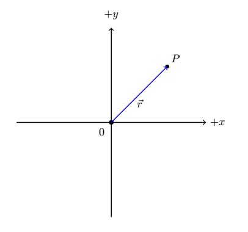
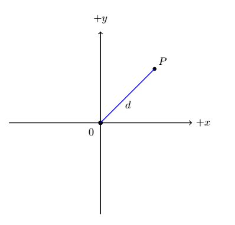
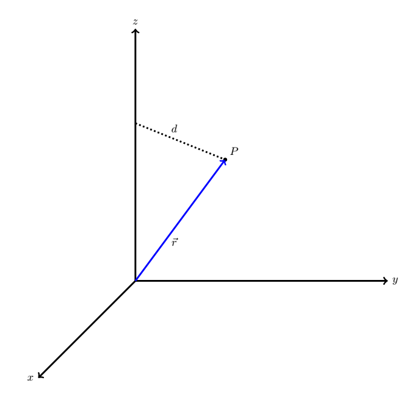

B4.1 Moment of Inertia#
B4.1.1 Short Intro#
We have previosly introduced the concept of mass and seen a few ways to define it such as a resistance to a change in linear motion (Newtonian definition) or amount of matter in a substance (more of a common sense approach). However, none of them are correct on the most fundamental level, where it is more a question of field interactions and it is still something we have difficulties explaining. One fact for sure: mass is an intrinsic property of field interactions and can be associated with any particles not traveling at the speed of light.
Moment of inertia on the other hand, is not an intrinsic property of matter but depends both on mass and reference frame of observation.
The approach to calculating the moment of inertia is significantly more complicated than many other physical parameters and an in-depth analysis of it is beyond the scope of this class. In the following, I will re-iterate what the textbook tells you, but also try and formulate it slightly different or approach it differently.
B4.1.2 Conceptual Definition#
Mass is a resistance to a change in linear motion
Moment of inertia is a resistance to a change in rotational motion
By linear motion we imply straight-line motion or motion that can be divided into straight-line segments. In principle, an object traveling in a circle can be approximated as a large number of small straight-line segments, with the circular motion obtained when the number goes to infinity. Later on, we will refer to this as the orbital motion. An object can also undergo rotational motion without any straight-line segments, that can happen when an uniform object is spinning around an axis through its center (it is a lot more complicated than it sounds, and we will see why later). We will refer to this kind of rotational motion as intrinsic motion.
To get a hands-on feel of these two conceptual definitions, try the following experiments at home.
Find the following items: beach ball, baseball, tennis ball, and golf ball. Rank their masses from low to high. Then find their masses using a kitchen scale.
Find a yard stick (or something similar). Attach a mass close to the end of the yard stick. Hold the yard stick by the end close to mass and hold it horizontally. Rotate the yard stick in the horizontal plane. Now flip the yard stick such that the mass is in the opposite end of your end and repeat.
Explanation of Experiment#
The typical rating is: beach ball, tennis ball, golf ball, and baseball. The ranking between the tennis ball and golf ball is the most difficult to assess since their masses and sizes are comparable. How do you determine it? Well, you may notice that with the tennis ball in one hand and the golf ball in the other hand, you start moving your hands up and down (in a linear fashion). Why? You are trying to assess their resistance to a change in motion. You are literally assessing the definition that Newton established for inertial mass. Where does the size come in? The size matter through pressure. We are not capable of sensing mass on our hand. Instead, there is an interaction (or force) acting on our hand. That force over the interaction area is known as pressure, and it is the pressure we are sensing. Since the golf ball has smaller contact area, we will sense it to be slightly more massive than the tennis ball. This observation is really emphasized by the beach ball, which is the most massive of all the objects, but since it has a large contact area, it is the object that exert the least amount of pressure and we sense that as being the least massive object.
Moment of inertia is the resistance to a change in rotational motion and depends both on mass and the location of the mass with respect to an axis of rotation (in this case, an axis that is perpendicular to the plane of rotation and through your elbow or wrist depending on you how rotated it). The further away the mass is from this axis, the greater the moment of inertia and the greater resistance to a change in rotational motion. Could you feel that? You can also try and just hold the stick at rest horizontally. You will need to apply a greater force to prevent it from “falling” down if the mass is further away as compared to when it is close to your hand.
B4.1.3 Qualitatively Definition: Point Particle#
We will consider a point particle at first. Let the point particle have a mass \(m\). For the vast majority of problems associated with this course, the particle is confined to motion in a plane, say the \(xy\)-plane. In the figure below, we consider the particle at point \(P\) in the \(xy\)-plane and its location is described through its position vector \(\vec{r}\).
We define the moment of inertia around the \(z\)-axis of the particle as
where \(r\) is the magnitude of the position vector. This is how it is commonly written in many textbooks, and it is in fact a horrible way of writing it as it leads to confusion and misunderstandings of the moment of inertia. We will see why in a little bit. Instead, let us remove the position vector label and label the distance from the origin (or even better the distance from the z-axis) as \(d\):
The only thing we did was to remove the position vector and label the distance between the \(z\)-axis and the particle by \(d\). The moment of inertia of the particle around the \(z\)-axis is then
This may seem like a trivial change, but it is extremely important for the understanding of the moment of inertia:
The distance \(d\) is the perpendicular distance from the axis of interest to the point of interest.
We will now demonstrate why using \(r\) can lead to misunderstandings if we do not understand how to use the equation correctly! In the above figure, it was implied that the \(xy\)-plane was situated at \(z = 0\). However, we could also consider the particle confined to a \(xy\)-plane where \(z \neq 0\), as illustrated in the figure below:
From this figure, it is evident that the magnitude of the position vector \(r\) is not equal to the distance \(d\), which is the distance that is needed in the equation for the moment of inertia around the \(z\)-axis. Let us re-iterate the conceptual definition of the moment of inertia for this case:
The moment of inertia around the \(z\)-axis for a point particle is the resistance to a change in rotational motion around the \(z\)-axis and is given by
where \(d\) is the perpendicular distance between the particle and the \(z\)-axis.
This is another standard notation from some textbooks. I am somewhat happier with this notation using \(d\) instead of \(r\). However, it often leads to a simplification of the moment of inertia and makes it simpler than should be allowed. Let us see why!
Ok, so if a particle is rotating around the \(z\)-axis, then we can use the above equation. But what if it is rotating around the \(x\)-axis or \(y\)-axis? This is an obvious question, and we can extend the above definition to account for those as well.
We can now define the moments of inertia around the three axes:
and it should be clear now why using \(d\) is better than using \(r\) and why it is better to use \(d_x\), \(d_y\), \(d_z\) instead of just \(d\). We notice that the distances relate to the magnitude of the projected components as
Example 1
A particle with a mass \(2.0\) kg is moving in a circular motion around the \(z\)-axis with a perpendicular distance of 0.1 m from the \(z\)-axis. What is its moment of inertia around the \(z\)-axis?
Solution
This is a plug’n’chuck problem:
NOTE: The fact that the particle was moving in a circular motion implied that the perpendicular distance remains constant and the moment of inertia is therefore a constant value.
Example 2
A particle with a mass \(2.0\) kg positioned at a point P given by the following position vector (in units of meter)
At this location, find the moment of inertia of the particle around the three axes.
Solution
In this case, we can identify the projected perpendicular distances in terms the magnitude of the components of position vector. Inserting into Equations (1)-(3)
A particle with a mass \(1.2\) kg positioned at rest at a point P given by the following position vector (in units of meter)
At this location, find the moment of inertia of the particle around the three axes. Around which axis will it be easiest to start rotating the particle? Around which axis would it be most difficult to start rotating the particle?
B8.1.4 Qualitatively Definition: System of Point Particles#
If we have a system of \(N\) particles, the moment of inertia of the system is the sum of the individual moments of inertia:
Example 3
A twirling baton has to masses positioned at each end and separated by 66 cm. We will assume the rod is massless and the end masses are point-like with masses of 75 g each. If we consider the baton along the \(x\)-axis with the \(z\)-axis going through the center of the rod and laying in the xy-plane, what are the moments of inertia around the \(x\), \(y\), and \(z\) axes?
Solution
We identify the following distances for both masses: \(r_x = 0.00\) m and \(r_y = r_z = 0.33\) m. Inserting into equations (4) - (6) and label the masses \(1\) and \(2\), respectively (we could also name them \(A\) and \(B\) etc.):
Note: We recognize that there is no cost to start rotating around the \(x\) axis. This is a consequence of the assumption of point particles. In a realistic approach, they may be spherical and the moment of inertia around the \(x\) axis is not zero initially. We will see that in Example 4.
Consider an olympic barbell with a length of 2.2 meters and assume it is massless (for now :)
The barbell in the figure has a 45 lb (20.4 kg) bumber plate on each end. Assume the bumper plates are point-like and positioned at the very ends of the barbell. If the barbell is situated along the \(x\)-axis with the \(z\)-axis going through the CM of the barbell and in the \(xy\)-plane, what are the moments of inertia around the \(x\), \(y\), and \(z\) axes?
B8.1.5 Qualitatively Definition: Continuous Objects#
Continuous objects are realistic objects and even the most basic objects such as rods, spheres, and cylinders, requires calculus learned in Calculus III to find their moments of inertia. Hence, I will not require you know how to calculate these the moments of inertia.
Instead, I expect you can look the moments of inertia up in a table and apply them to a given problem. Below is a link showing the moments of inertia of the most common objects and the axis of which it is calculated about.
Wikipedie has an extensive list of moments of inertia that is sufficient for this course.
Example 4
Let us now re-visit the baton problem again under certain conditions.
A twirling baton has to masses positioned at each end and separated by 66 cm. The rod has a mass of 30 g and a radius of 0.0050 m. The end masses are spherical with masses of 75 g each and radius of 3.0 cm. The baton is situated such that its main axis is along the \(x\) axis. What is the moment of inertia around the \(x\)-axis?
Solution
The axis of interest is passing through the center of the spheres, so their moments of inertia are given by \(I = \frac{2}{5}MR^2\) while the axis runs through the rod along its long axis. This is the equivalent of the solid cylinder: \(I = \frac{1}{2}MR^2\). Let is label the spheres by (1) and (2), and the rod by (3):
Note: While this is small, it is not non-zero as in our previous example of the non-realistic baton.
We may note that we are not yet able to calculate the moment of inertia for the baton around the \(y\) or \(z\) axes. That’s next!
B8.1.6 The Parallel Axis Theorem#
The last piece of the puzzle!
If we know the moment of inertia around an axis through the Center of Mass (CM) of an object with mass M: \(I_{CM}\), then the moment of inertia through any axis parallel to the axis through the CM is given by
where \(D\) is the distance between the two axes.
Example 5
Consider a sphere of mass 5.0 kg and radius 0.20 m. It is located at an exact position of \((x,y,z) = (3,0,0)\) with units in meters. Find the moment of inertia of the sphere around the \(z\)-axis.
Solution
First find the moment of inertia of the sphere about an axis through its CM and along the z-axis:
Then we apply the Parallel Axis Theorem to find the moment of inertia around the \(z\)-axis. We recognize that the distance between an axis through the CM and parallel to the \(z\) axis and the \(z\)-axis is \(D = 3.0\) m:
If we consider significant figures, our answer is
Note: Think about which factor contributes most to this moment of inertia.
Consider an olympic barbell with a length of 2.2 meters, mass of 20 kg, and radius of 3.5 mm (we will assume it is uniform radius across the entire barbell).
The barbell in the figure has a 45 lb (20.4 kg) bumber plate on each end. Assume the bumper plates are disk shaped with a radius of 45 cm and positioned at the very ends of the barbell. If the barbell is situated along the \(x\)-axis with the origin passing through its CM and in the xy-plane, what are the moments of inertia around the \(x\), \(y\), and \(z\) axes?